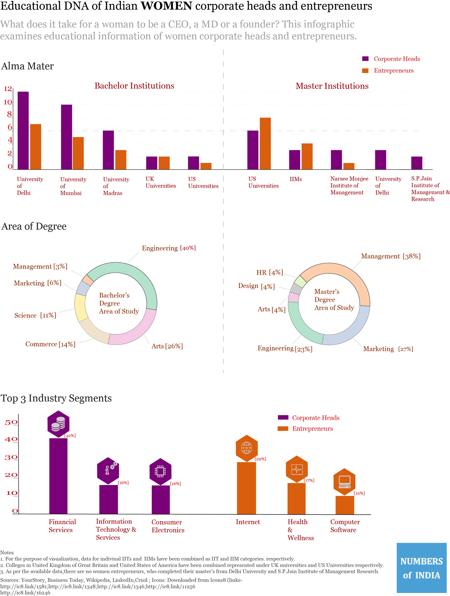

According to a study by International Center for Research on Women, higher levels of education helps women in bringing meaningful impact not only to their life but to communities. In the spirit of International Women’s Day, for a change instead of focusing on the problems (like low participation rate of women in urban workforce, gender pay gap etc.), let’s look at the educational background of women corporate leaders and entrepreneurs.